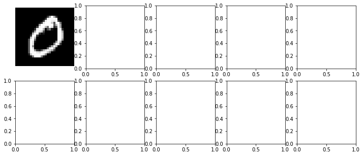
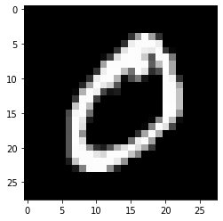
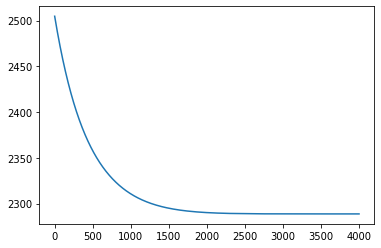
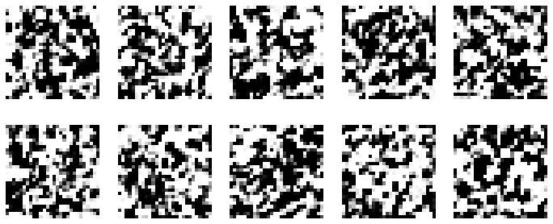

import os
os.environ["CUDA_VISIBLE_DEVICES"] = "0"
# JAX don't pre-allocate memory; allocate as-needed
os.environ["XLA_PYTHON_CLIENT_PREALLOCATE"] = "false"
from tqdm import tqdm
import numpy as np
import jax
import jax.numpy as jnp
import flax.linen as nn
from tinygp import kernels, GaussianProcess
import optax
# load MNIST data
from tensorflow.keras.datasets import mnist
import matplotlib.pyplot as pltdata = mnist.load_data()
X = data[0][0] / 255.0
y = data[0][1]
print(X.shape, y.shape)(60000, 28, 28) (60000,)# select 100 examples from each class
n_each = 10
n_classes = 1
imgs = jnp.concatenate([X[y==i][:n_each] for i in range(n_classes)])
print(imgs.shape)
fig, ax = plt.subplots(2, 5, figsize=(12, 5))
ax = ax.flatten()
for i, axes in zip(range(0, n_each*n_classes, n_each), ax):
axes.imshow(imgs[i].reshape(28, 28), cmap='gray')
axes.axis('off')(10, 28, 28)
plt.imshow(imgs[0], cmap='gray');
imgs.min(), imgs.max()
class Transformer(nn.Module):
"""A small neural network used to non-linearly transform the input data"""
@nn.compact
def __call__(self, x):
x = nn.Dense(features=256)(x)
x = nn.relu(x)
x = nn.Dense(features=256)(x)
x = nn.relu(x)
# x = nn.Dense(features=256)(x)
# x = nn.relu(x)
# x = nn.Dense(features=256)(x)
# x = nn.relu(x)
x = nn.Dense(features=256)(x)
return x
def get_gp(theta, X):
scale = jnp.exp(theta['log_scale'])
var = jnp.exp(theta['log_var'])
noise_var = jnp.exp(theta['log_noise_var'])
nn_params = theta['nn_params']
nn_params = jax.lax.stop_gradient(nn_params)
X_nn = nn_model.apply(nn_params, X)
print(X.shape, X_nn.shape)
kernel = var * kernels.ExpSquared(scale=scale)
return GaussianProcess(kernel, X_nn), X_nn
def loss_fn(theta, X, y):
gp, X_nn = get_gp(theta, X)
print("y", y.shape, y.max(), y.min())
y_logit = jnp.log(y+1e-6) - jnp.log1p(-y+1e-6)
return -jax.vmap(gp.log_probability)(y_logit).mean()# + jnp.mean((X_nn.ravel() - y.ravel())**2)
value_and_grad_fn = jax.jit(jax.value_and_grad(loss_fn))n, h, w = imgs.shape
x_grid = jnp.linspace(0, 1, h)
y_grid = jnp.linspace(0, 1, w)
X, Y = jnp.meshgrid(x_grid, y_grid)
X_input = jnp.stack([X.flatten(), Y.flatten()], axis=1)
y_input = imgs.reshape(n, -1)
nn_model = Transformer()
key = jax.random.PRNGKey(0)
nn_params = nn_model.init(key, X_input)
trial_theta = {"log_scale": np.log(1.0), "log_var": np.log(1.0), "log_noise_var": np.log(1.0), "nn_params": nn_params}
value = loss_fn(trial_theta, X_input, y_input)
value(784, 2) (784, 256)
y (10, 784) 1.0 0.0Array(6473231., dtype=float32)# def nn_loss_fn(theta, X, y):
# y_pred = nn_model.apply(theta['nn_params'], X)
# print(y_pred.shape, y.shape)
# return jnp.mean((y_pred.ravel() - y.ravel())**2)
# nn_value_and_grad_fn = jax.jit(jax.value_and_grad(nn_loss_fn))
# opt = optax.adam(1e-3)
# opt_state = opt.init(trial_theta)
# def nn_one_step(theta_and_state, aux):
# theta, opt_state = theta_and_state
# value, grad = nn_value_and_grad_fn(theta, X_input, y_input)
# updates, opt_state = opt.update(grad, opt_state)
# new_theta = optax.apply_updates(theta, updates)
# return (new_theta, opt_state), value
# (trial_theta, opt_state), loss_history = jax.lax.scan(nn_one_step, (trial_theta, opt_state), None, length=1000)
# print("final_loss", loss_history[-1])
# plt.plot(loss_history)
# value = loss_fn(trial_theta, X_input, y_input)
# value# plt.imshow(nn_model.apply(trial_theta['nn_params'], X_input).reshape(28, 28).__array__(), cmap='gray');theta = jax.tree_map(jnp.array, trial_theta)
optimizer = optax.adam(1e-1)
state = optimizer.init(theta)
epochs = 5000
def one_step(theta_and_state, aux):
theta, state = theta_and_state
loss, grads = value_and_grad_fn(theta, X_input, y_input)
updates, state = optimizer.update(grads, state)
theta = optax.apply_updates(theta, updates)
return (theta, state), loss
(theta, state), loss_history = jax.lax.scan(one_step, (theta, state), None, length=epochs)(784, 2) (784, 256)
y (10, 784) Traced<ShapedArray(float32[])>with<DynamicJaxprTrace(level=2/0)> Traced<ShapedArray(float32[])>with<DynamicJaxprTrace(level=2/0)>plt.plot(loss_history[1000:]);
gp, init_gen = get_gp(theta, X_input)
print(f"lengthscale: {jnp.exp(theta['log_scale'])}, variance: {jnp.exp(theta['log_var'])}, noise: {jnp.exp(theta['log_noise_var'])}")
gen_imgs = jax.nn.sigmoid(gp.sample(jax.random.PRNGKey(0), (10,)))
# plt.imshow(init_gen.reshape(28, 28).__array__(), cmap='gray');
fig, ax = plt.subplots(2, 5, figsize=(12, 5))
ax = ax.flatten()
for i, axes in zip(range(10), ax):
axes.imshow(gen_imgs[i].reshape(28, 28), cmap='gray')
axes.axis('off')(784, 2) (784, 256)
lengthscale: 0.2095336765050888, variance: 64.935546875, noise: 1.0
# gen_imgs[0].min(), gen_imgs[0].max()
jnp.mean((gen_imgs[0] - y_input[0])**2)Array(0.40566167, dtype=float32)